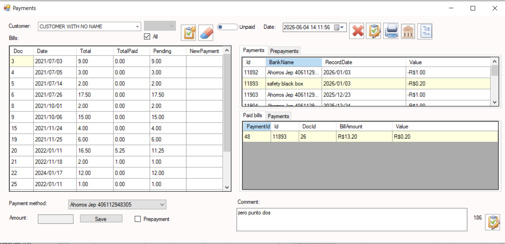
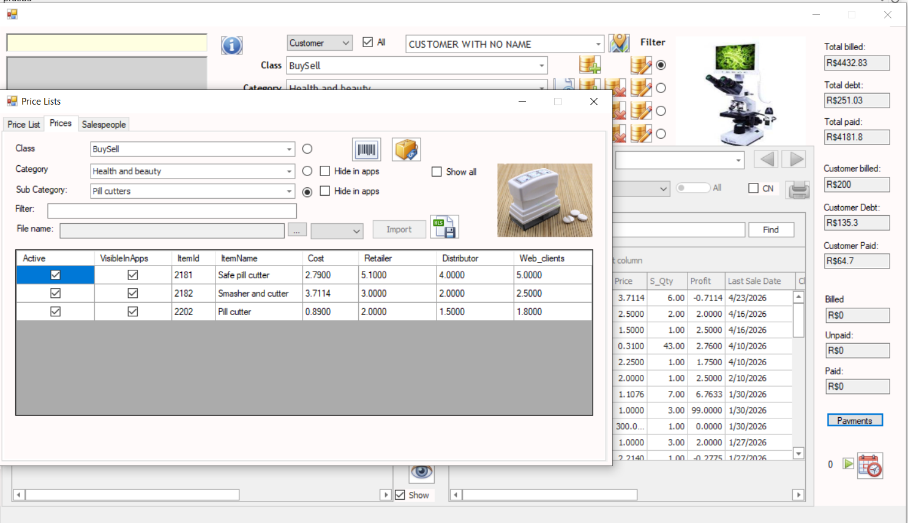
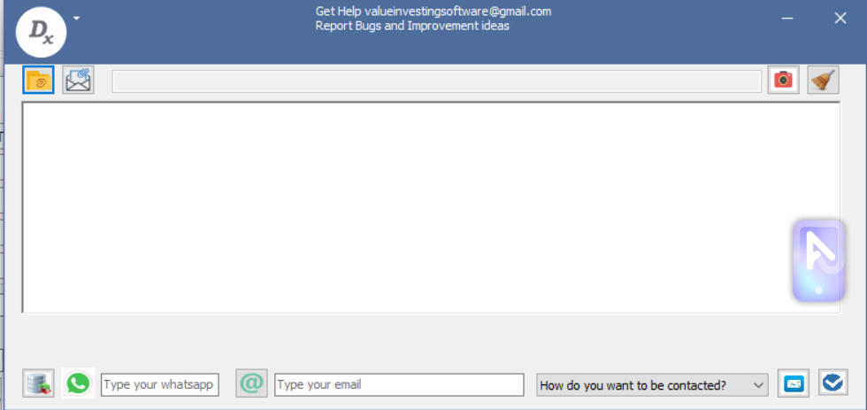
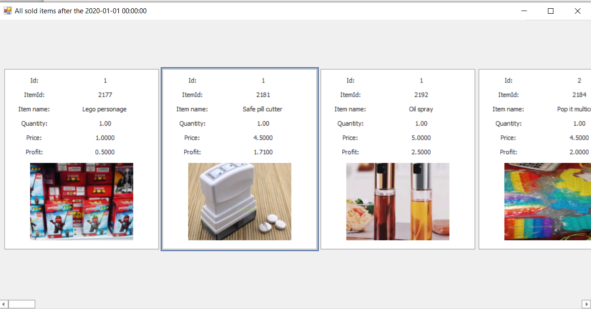

Desenvolvido para Empresas em Crescimento
Este software foi criado para oferecer a robustez normalmente encontrada em sistemas corporativos, mantendo-se prático e fácil de utilizar. As organizações podem gerenciar clientes, fornecedores, estoque, vendas, compras, territórios, equipes de campo, processos de sincronização e relatórios operacionais a partir de um ambiente unificado.
A plataforma integra software desktop, aplicativos móveis, lojas virtuais e serviços de sincronização, ajudando as empresas a manter informações precisas em múltiplos ambientes.
Transações de Vendas e Compras
Tela central de transações utilizada para registrar vendas, compras, faturas, créditos, débitos e operações comerciais. Projetada para oferecer alta produtividade e eficiência operacional no dia a dia.

Adiantamentos e Liquidações
Gerencie adiantamentos de clientes, pagamentos antecipados a fornecedores, liquidações de faturas, aplicações de pagamentos e conciliação de saldos pendentes.

Razão de Clientes
Histórico detalhado das contas de clientes mostrando faturas, pagamentos, saldos, créditos, débitos e movimentações financeiras. Proporciona total visibilidade financeira.

Administração Comercial
Gerencie listas de preços, estruturas de preços, vendedores, agentes de compras, territórios comerciais e zonas de vendas.

Controle de Estoque e Kardex
Relatórios avançados de estoque incluindo histórico de movimentações, saldos de estoque, rastreamento de transações e recursos de auditoria de inventário.

Central Integrada de Suporte
Plataforma integrada de suporte que permite aos usuários comunicar-se diretamente com a equipe de desenvolvimento, registrar incidentes e solicitar assistência.

Catálogo Gráfico de Produtos
Catálogo visual de produtos exibindo imagens, descrições, informações de preços e detalhes de estoque em um formato intuitivo.

Configuração do Sistema
Módulo abrangente de administração de parâmetros utilizado para configurar regras operacionais, políticas empresariais e comportamento do sistema.

Central de Sincronização
Transfira e sincronize informações entre sistemas desktop, aplicativos móveis, operações de campo e lojas online.

Administração de Clientes e Fornecedores
Gerencie registros de clientes e fornecedores, informações de contato, dados fiscais, condições comerciais e detalhes operacionais.

Análise de Distâncias
Calcule distâncias entre clientes, fornecedores, territórios de vendas e locais operacionais para melhorar o planejamento.

Mapeamento da Equipe de Vendas
Visualize a equipe comercial geograficamente, melhore a gestão de territórios e otimize as atividades de campo.

Administração de Cidades
Gerencie cidades e dados geográficos de referência utilizados em toda a aplicação para logística, relatórios e operações comerciais.

Clientes e Fornecedores Georreferenciados
Armazene coordenadas geográficas de clientes e fornecedores para permitir mapeamento, otimização de rotas e análise de proximidade.